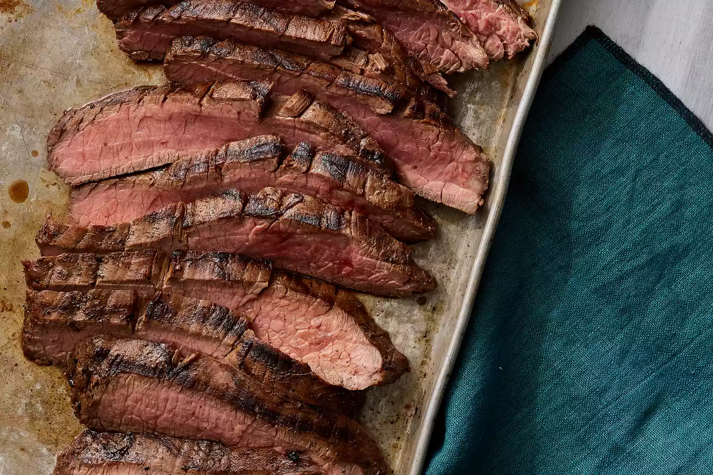

Yummy Steak

Mouth watering Steak
This crowd-pleasing flank steak marinade will impress anybody you want to impress rather it be your significant
others grandparents or your crush with the nice looking bbl. Once you bite into this juicy piece of meat your
whole will change in an instant. This intense meal is not so scary to make as it looks and if you decide to
stick around i will explain to you how to make this immaculate dish.
Ingredients
- 1 pound flank steak
- 1/2 vegatable oil
- 1/3 low-sodium soy sauce
- 1/4 cup red wine vinegar
- fresh lemon juice
- Worcestershire sauce
- Dijon mustard
- 2 cloves garlic, minced
- ground black pepper
Steps
- Whisk together oil, soy sauce, vinegar, lemon juice, Worcestershire sauce, Dijon mustard, garlic, and pepper
for marinade in a 9x13-inch glass baking dish until thoroughly combined.
- Add flank steak to the baking dish; turn several times to coat thoroughly with marinade. Cover, and
refrigerate for 2 to 6 hours, or up to 12 hours if you have time.
- When ready to cook, preheat an outdoor grill for medium-high heat and lightly oil the grate.
- Remove steak from the marinade and shake off excess. Discard the remaining marinade.
- Cook steak on the preheated grill for about 5 minutes per side, or to desired doneness.
- Worcestershire sauce
- Remove from the grill and let rest for 5 minutes before slicing and serving.